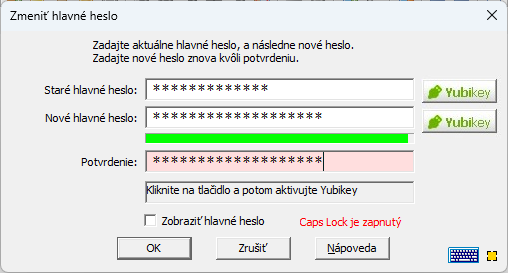

Ak chcete zmeniť hlavné heslo, najprv otvorte databázu, ktorej heslo chcete zmeniť. Po otvorení prejdite do menu Spravovať a vyberte možnosť Zmeniť hlavné heslo. Zobrazí sa nasledujúce okno:
Poznámka: Ak nemáte zariadenie YubiKey, tlačidlá YubiKey sa nezobrazia a popis ich použitia nižšie môžete ignorovať.
Teraz by ste mali zadať aktuálne hlavné heslo
a potom nové hlavné heslo (dvakrát na potvrdenie). Tieto heslá je možné zadať pomocou fyzickej alebo virtuálnej klávesnice.
Ukazovateľ sily pod poľom Nové hlavné heslo poskytuje približnú predstavu o sile hesla. Červená farba označuje slabé heslo, žltá stredne silné heslo a zelená označuje silné heslo.
Vaše hlavné heslo by malo byť silné, to znamená, že lišta by mala byť plná a zelená.
Password Safe má zabudovanú kontrolu toho, čo považuje za slabé hlavné heslá. Vo všeobecnosti by hlavné heslo (ako každé heslo) malo pozostávať zo zmiešaných malých a veľkých písmen a aspoň jedného čísla alebo špeciálneho znaku (napríklad tými, ktoré sa nachádzajú nad číselnými klávesmi na klávesnici). Ak zadáte hlavné heslo, ktoré program považuje za slabé, zobrazí sa výzva na potvrdenie. Môžete si vybrať, či pôvodne zadané (slabé) heslo prijmete, alebo zadáte nové, silnejšie heslo.
Po začiarknutí políčka "Zobraziť hlavné heslo" sa obsah starého a nového hlavného hesla zobrazí jasne a pole na úpravu potvrdenia sa deaktivuje, pretože už nie je potrebné.
Pre používateľov YubiKey: Okrem zmeny hlavného hesla, ako je popísané vyššie, toto okno umožňuje pridať alebo odstrániť overenie pomocou YubiKey, pridať alebo odstrániť ďalšie overenie heslom, ako aj prepnúť YubiKey, ktorý sa používa na prístup k aktuálnej databáze. Nasledujú pokyny pre každú z týchto akcií:
Ak chcete previesť databázu hesiel, ku ktorej sa pristupuje pomocou hlavného hesla, na použitie s YubiKey:
Ak chcete zmeniť databázu hesiel, aby bola chránená iba hlavným heslom:
Password Safe môže používať YubiKey ako jediný prístupový mechanizmus alebo spolu s bežným heslom. Ak chcete zmeniť jedno na druhé:
Prepnutie z jedného YubiKey kľúča na druhý:
Poznámky: